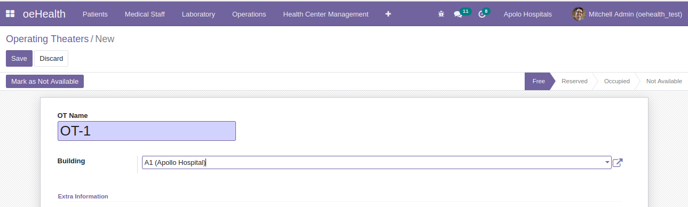
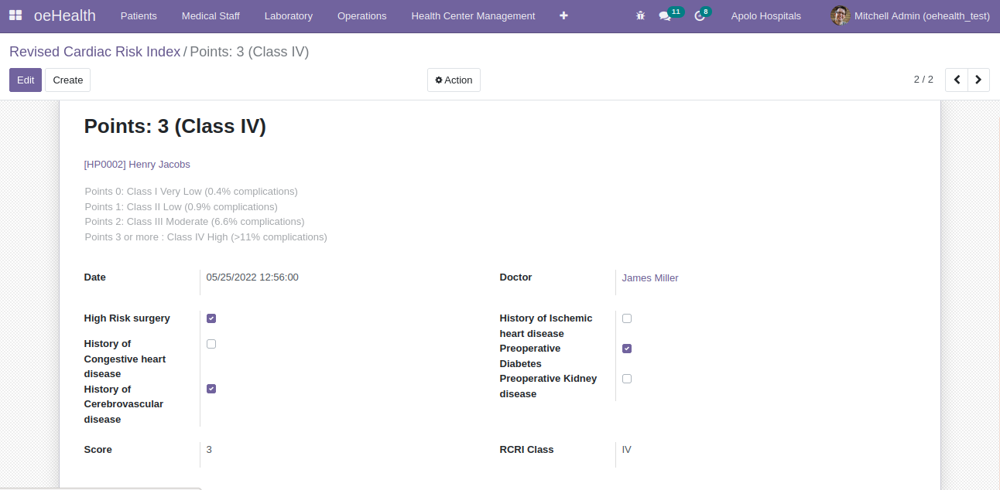
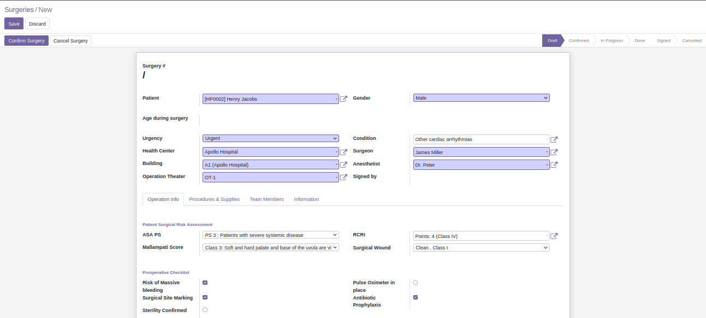

Surgical Management feature of oeHealth allows healthcenter streamline surgery related activities from easily configuring operation theatres, to assessing the surgery criticialness, manage medical resources used for surgeries and to performing surgeries seamlessly.
Configure operation theatres of your Hospital and mark its status regarding its availability such as Free, Reserved, Occupied & Not Available and also additional information can be added for OT.

Revised Cardiac Risk Index or RSRI is an index that shows complications of patients related to Cardiac problems.
Based on the information entered regarding the medical issues of the patient, the system automatically generates Score and RCRI class which indicates the severeness of the complexity.

Surgery can be created by filling the required details of the patients before surgery.
Medical resources such as procedures, supplies, team involved in the surgery can also be mentioned.
Status of the surgery can also be mentioned.
Additional details regarding the surgery can also be recorded. For ex: Anesthesia report.
